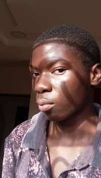

Akinola Ifeoluwa Michael | WDD 130
Hello there!, I'm Ifeoluwa Akinola from Abuja, Nigeria. I love learning new things that will be of benefit to me and also to others, I enjoy watching soccer sometimes, I'm passionate about Medicine as a course and I enjoy helping people in the little way I can. I am a fan of wrestling and also that of Action movies. I am currently learning web design and development from BYU Idaho and I am excited to see where this leads me and who I can help with the knowledge I am gaining from this.